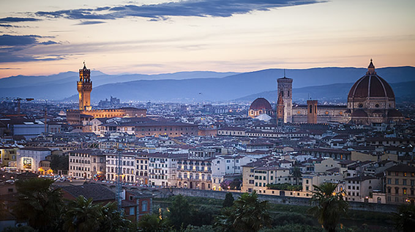

英国，伦敦
吃货购物奇葩
- 同伴最多 4人
- 9:00-19:00
- 随游时长2小时
详情描述
威斯敏斯特宫（Palace of Westminster），又称国会大厦（Houses of Parliament）是英国国会（包括上议院和下议院）的所在地。威斯敏斯特宫是哥特复兴式建筑的代表作之一，1987年被列为世界文化遗产。 该建筑包括约1,100个独立房间、100座楼梯和4.8公里长的走廊。尽管今天的宫殿基本上由19世纪重修而来，但依然保留了初建时的许多历史遗迹，如威斯敏斯特厅（可追溯至1097年），今天用作重大的公共庆典仪式，如国葬前的陈列等
威斯敏斯特宫
威斯敏斯特宫（Palace of Westminster），又称国会大厦（Houses of Parliament）是英国国会（包括上议院和下议院）的所在地。威斯敏斯特宫是哥特复兴式建筑的代表作之一，1987年被列为世界文化遗产。 该建筑包括约1,100个独立房间、100座楼梯和4.8公里长的走廊。尽管今天的宫殿基本上由19世纪重修而来，但依然保留了初建时的许多历史遗迹，如威斯敏斯特厅（可追溯至1097年），今天用作重大的公共庆典仪式，如国葬前的陈列等。
威斯敏斯特宫
威斯敏斯特宫（Palace of Westminster），又称国会大厦（Houses of Parliament）是英国国会（包括上议院和下议院）的所在地。威斯敏斯特宫是哥特复兴式建筑的代表作之一，1987年被列为世界文化遗产。 该建筑包括约1,100个独立房间、100座楼梯和4.8公里长的走廊。尽管今天的宫殿基本上由19世纪重修而来，但依然保留了初建时的许多历史遗迹，如威斯敏斯特厅（可追溯至1097年），今天用作重大的公共庆典仪式，如国葬前的陈列等。
推荐理由：
依然保留了初建时的许多历史遗迹，如威斯敏斯特厅
价格内容
 接/送机费用用车费用车费用车费用车费用车费用车费
接/送机费用用车费用车费用车费用车费用车费用车费 用车费
用车费
用户评价10


-
 吴青筱
吴青筱
大道两旁皆是色彩缤纷的花园和雅致的风味餐厅
-
吴青筱
大道两旁皆是色彩缤纷的花园和雅致的风味餐厅
-
吴青筱
大道两旁皆是色彩缤纷的花园和雅致的风味餐厅